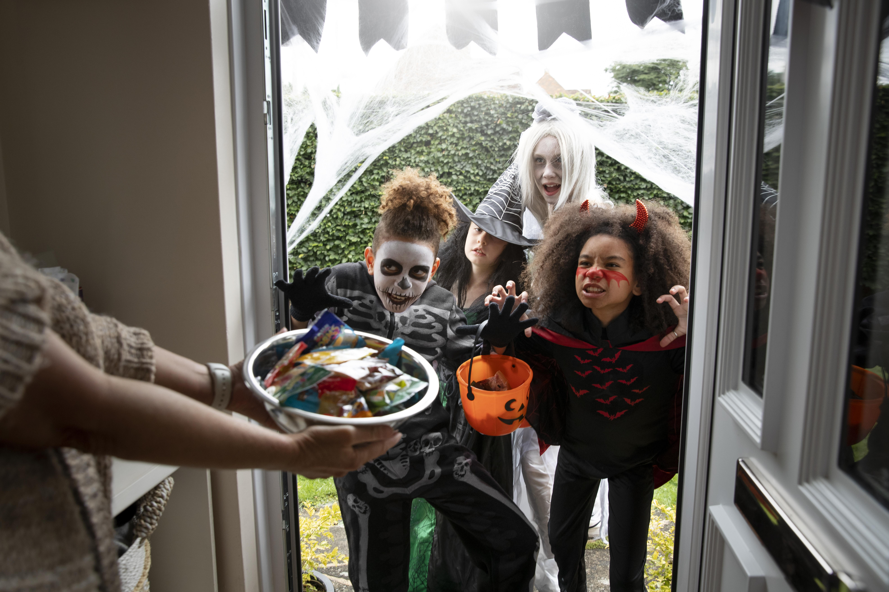

Scary farm - młodzież i dzieci oprócz organizowania domowych imprez często odwiedza tzw. straszne farmy (ang. scary farm), czyli zaadaptowane na ten cel duże przestrzenie, gdzie tworzone są specjalne scenerie, wyglądające niczym wystrój planu filmów grozy, takich jak Nosferatu, Drakula, Frankenstein czy Mumia.
Cukierek albo psikus - do zabaw w Halloween zalicza się także zabawa cukierek albo psikus (ang. trick or treat). Dzieci chodzą z pojemnikami na cukierki po okolicy i odwiedzają mieszkańców. Gdy ktoś nie chce dać cukierka, otrzymuje od dzieci w zamian psikusa.

Apple bobbing - w tej zabawie należy bez użycia rąk ugryźć jedno z jabłek pływających w miednicy z wodą. Jabłko nieuszkodzone przy zabawie ma oznaczać szczęście w nadchodzącym roku.
Inne zabawy - Halloweenowe zabawy to również przeskakiwanie przez świeczki, które są rozstawione w kole na ziemi. Świeczki, które nie zgasną, to szczęśliwe miesiące w przyszłym roku. Kolejna gra to wrzucanie orzecha do ogniska. Jeżeli orzech pęknie z trzaskiem, oznacza to odwzajemnioną miłość. Inną popularną zabawą jest zjadanie bez pomocy rąk wiszących na nitkach ciastek i owoców. W ten dzień również istnieją różne formy wróżbiarstwa, np. wróżenie ze spodków, wróżenie z obierek jabłek. W Halloween dzieci i dorośli przebierają się za potwory, takie jak wampiry, duchy czy czarownice. Kostiumy są również oparte na postaciach z telewizji. Pierwsze kostiumy na Halloween pojawiły się w 1930 roku, wtedy zwyczaj cukierek albo psikus (trick or treat) stał się popularny w Stanach Zjednoczonych. Dorośli urządzają pochody przez ulice miast.